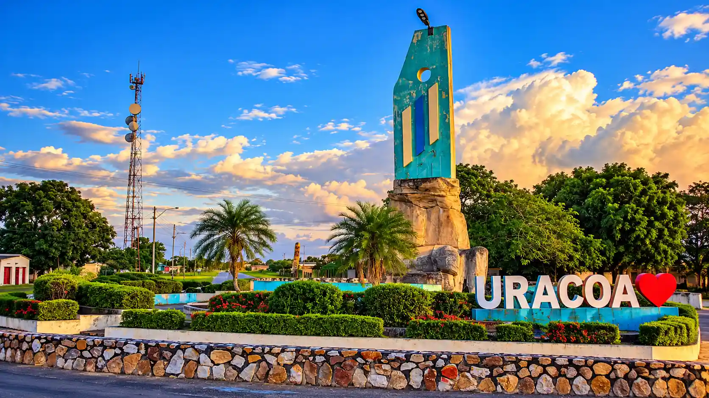
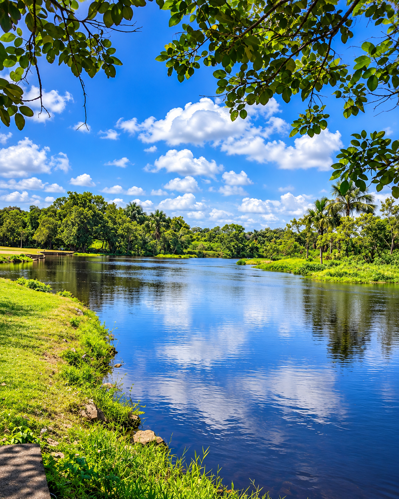
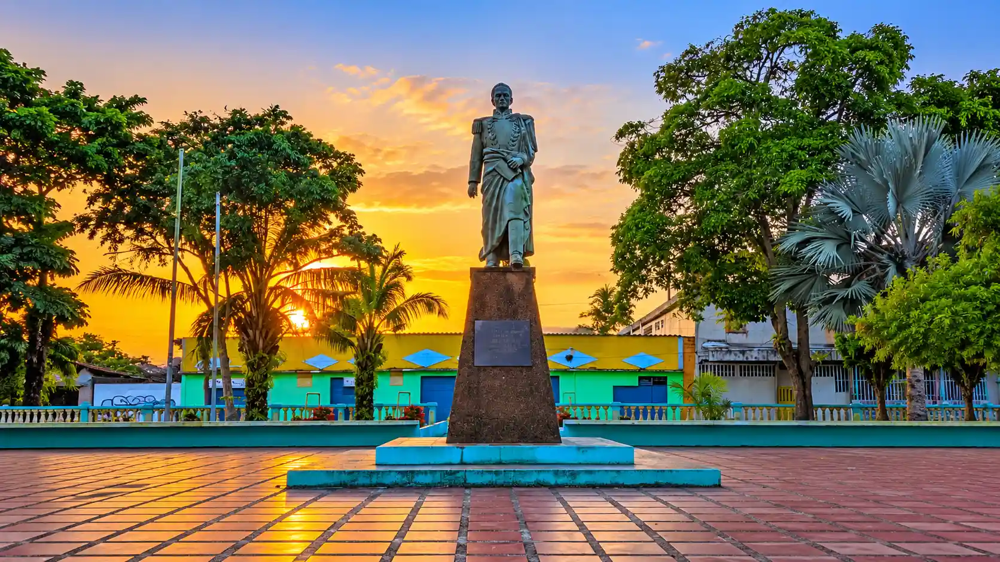
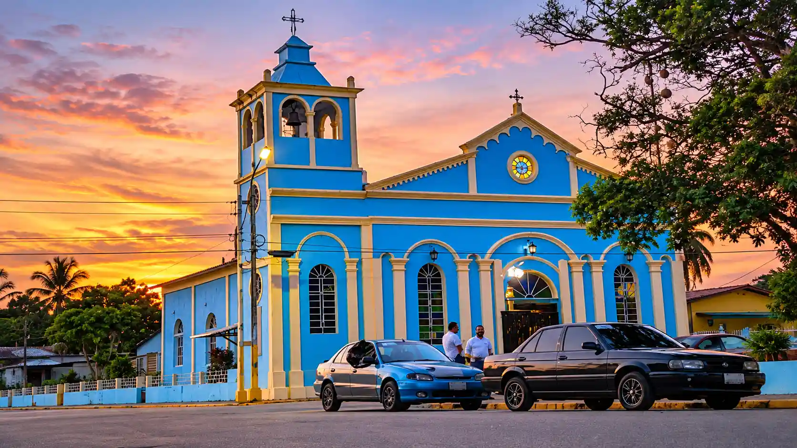
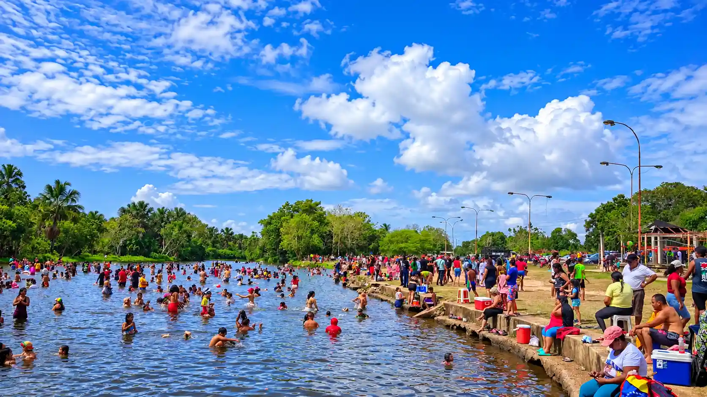

Descubre
Esto es Uracoa.
Un territorio donde el río, la historia, la naturaleza y las tradiciones forman parte de una misma identidad.

Explora
Una tierra por descubrir.

Historia

Cultura

El río
Patrimonio
Uracoa Histórica
Una historia que atraviesa generaciones.
Lugares
Conoce Uracoa.
Río Uracoa
El río que forma parte de nuestra identidad.
Conocer el río →
Nuestra gente
Cultura viva.
Tradiciones, celebraciones, arte e historias que mantienen viva la identidad de Uracoa.
Sabores
Sabores de Uracoa.
Gastronomía, productos y costumbres que forman parte de la vida del municipio.
Tu viaje
Planifica tu visita.
Descubre cómo llegar, qué lugares visitar y cómo vivir Uracoa a tu ritmo.
Próximamente encontrarás aquí la información sobre cómo llegar.
Imágenes
Mira Uracoa.
Paisajes, patrimonio, naturaleza y momentos que cuentan la historia del municipio.
Estamos preparando la galería de Uracoa.